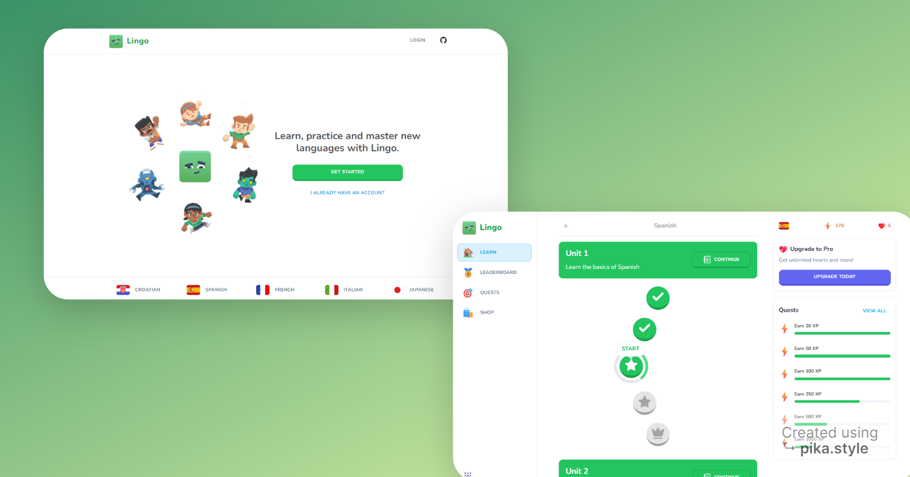
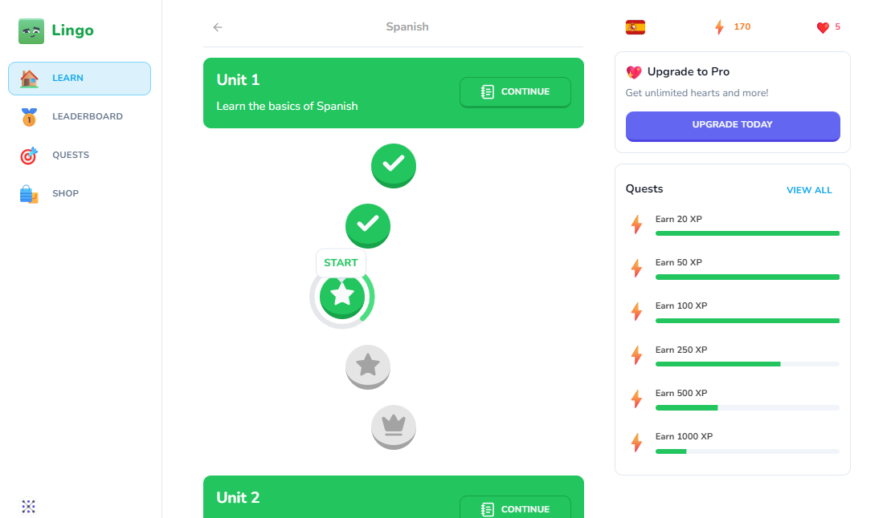
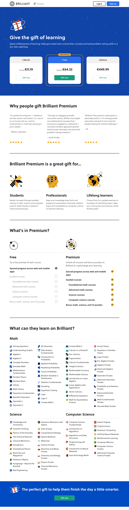
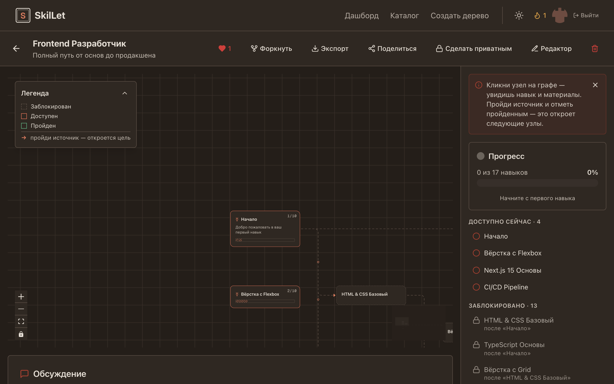

สถาปัตยกรรมแนะนำ: The Socratic Quest (Hybrid Masterpiece)
ผสาน 3 พลังเข้าด้วยกัน: ซ้าย (Roadmap ด่านการเรียน) + กลาง (Card ถาม-ตอบกระตุ้นคิดสไตล์ Brilliant) + ขวา (ผัง KGLite Knowledge Graph ที่สว่างเรืองแสงเมื่อผู้เรียนพิสูจน์ได้)
หากเรานำลูกตุ้มนี้ไปแกว่งบน ดวงจันทร์ ซึ่งมีแรงโน้มถ่วงเพียง 1/6 เท่าของโลก คาบการแกว่ง (เวลาต่อนัด) จะเป็นอย่างไร?
ลองใช้สัญชาตญาณทำนายผลก่อนดูเฉลย — เมื่อแรงดึงกลับลดลง ลูกตุ้มจะเคลื่อนที่เร็วขึ้นหรือช้าลง?
n_g: แรงโน้มถ่วงทำหน้าที่เป็น restoring force
n_len: ความยาวเชือกส่งผลโดยตรงต่อระยะทางแกว่ง
n_period: คาบเวลาผกผันกับรากที่สองของ $g$
Archetype A: Duolingo Gamified Road (สนุก ปลดล็อกด่าน ดึงดูดสูง)
จุดเด่นคือ เส้นทางคดเคี้ยวรูปงู (Winding Road), ปุ่ม 3 มิตินูนที่กดแล้วยุบ, หัวใจพลังงาน (Hearts) และ เสียงตอบรับ Audio Chimes
Archetype B: Brilliant.org First-Principles Studio (มินิมอล มีระดับ วิเคราะห์ลึก)
จุดเด่นคือ Interactive Visual Widgets ที่ให้ผู้เรียนปรับเลื่อนค่า (Sliders) เพื่อดูผลลัพธ์เชิงฟิสิกส์/คณิตศาสตร์แบบเรียลไทม์ และการนำเสนอแบบ Card Deck ทีละแผ่น
สำรวจ: ความยาวเชือก (L) และแรงโน้มถ่วง (g) ส่งผลต่อคาบอย่างไร?
Archetype C: RPG Skill Tree (ผังต้นไม้สกิลแบบ React Flow)
จุดเด่นคือ โครงข่ายความรู้ขนาดใหญ่แบบ RPG เช่นเดียวกับ SkilLet หรือ Human Skill Tree ที่ใช้ @xyflow/react ลาก ย่อ ขยาย และโหนดจะเรืองแสงตามระดับความเข้าใจ
ภาพแคปจากระบบของจริง (Real-World Screenshots & Demos)
ภาพแคปจริงจาก GitHub Repositories และ Live Apps ที่ทีมงานได้ดึงมาเก็บไว้ในเครื่อง เพื่อให้ท่านประธาน (CEO) ได้เทียบภาพอย่างชัดเจน 100%



